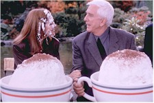

A trumpet trill, then a disclaimer that this film is
based on real events...from other movies. You know exactly what to expect in this
entertaining burlesque of The Fugitive, so sit down (watch out for that whoopee
cushion!) and enjoy the latest Hollywood sendup of films immemorial. For the most part it
delivers, demolishing themes and scenes from at least 35 other moving pictures along the
way, which begs the question why the writer credit doesn’t say "inspired by
AFI’s 100 Best Films list." In the world of
Hollywood sendup (and it hasn’t been a good one this summer), Warner Bros. can now
start wiping some of that egg off its face for its marketing flameout last week on The Avengers. While I don’t think some distribution
execs have a lot of faith in Wrongfully Accused, at least they pre-screened this
one for the press, albeit only on the eve of opening day. If the studio had offered (they
didn’t), I would have been happy to hop overseas to catch an early show, as the film
opened in Germany a month ago. Guess someone wanted to try and prop up the Deutsche Mark
with a little humor. And, if an American public gives this film a shot (heck it aims
enough of them back at you), perhaps we may just have the solution on how to get beyond
this Lewinsky thing. While it’s not great funny, it certainly was beyond my
expectations and a worthy diversion from the political travails of everyday life here in
the nation’s capital, and perhaps in your town too.
Nielsen is his usually carefree and careless self in a clone-gone-batty amalgam of Thomas Clancy’s CIA whiz and one of the most popular movie stars of the last 20 years (hint: look at the character’s name). I doubt Nielsen will ever return to the dramatic performances that some of us old-timers remember from among his 60-plus films and 1,500 (yipes!) television appearances, as he certainly has honed his comedy shtick in a generous string of comedy hits (and some notable misses, i.e. Mr. Magoo) since 1980’s Airplane. In Wrongfully he’s again in fine form, obviously having the time of his life (especially opposite two younger women), and hence resulting in the Law of Infectious Laughter, which expounds that watching this film with larger and more compacted audiences logarithmically increases the amount of your twittering.

I didn’t take as many notes while watching this film as the visual and verbal jabs kept getting in the way. And while not as cram-packed with yuks as some of its predecessors, many of the gags work. I particularly liked the re-mastered bus/train crash (watch out for that banana peel!) and the very determined locomotive cast in the role. Among the human support are Richard Crenna in the Tommy Lee Jones’ role of overzealous and overboard U.S. Marshal Fergus Falls, barking at his deputies when not engaging in cat-and-Marx Brothers routines with his escaped prisoner. Love interest is provided by Kelly Le Brock as adulterous Lauren Goodhue, the suddenly grief-stricken widow ("You mean I’ll have to start dating again?") of portable potty magnate Hibbing Goodhue (Michael York). Melinda McGraw also gets a few smooches from our hero as she tries to figure out how she relates to all the other players. Sandra Bernhard gets fourth billing but her role lasts less than a minute. Don’t blink. Aaron Perl is the discombobulated Mr. Potato Head as the one-armed, one-legged, one-eyed (flying purple people eater?) killer with lethal prosthetics.Finally, DO NOT LEAVE THE THEATER BEFORE THE CREDITS ARE DONE. You should know that this is one of the more enjoyable postscripts for comedies of this ilk. Winning lottery numbers, the director’s favorite lunch on a cold, rainy day, and today’s menu are just a few to watch for. All in all, a nice follow up punch for a knockout of a film.